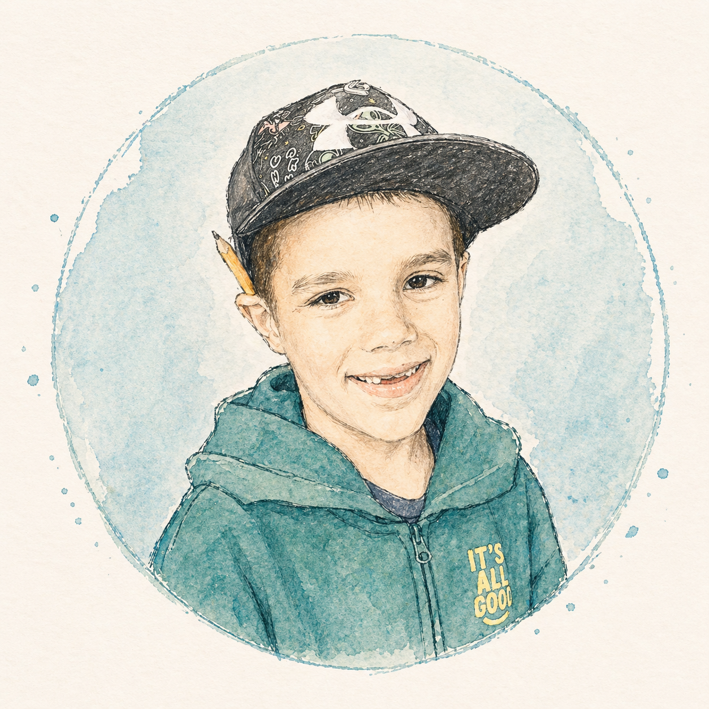

Hey, I'm Max!
Artist · Age 7 · Pencil Fish Studio
I've been drawing since I was really little. Now I draw almost every day! I like drawing animals, made-up creatures, and anything that pops into my head.
I started Pencil Fish Studio so I can share my drawings with you.
I drew every picture here myself. I hope you find one you love!
See My ArtA few things about me
I draw something new almost every day
Pencils are my favourite. Markers are fun too!
A fish was the first drawing I was really proud of
When I grow up I want to be an artist or an engineer!
Come say hi!
Follow along on Instagram to see my new art first, or ask me to draw something just for you!